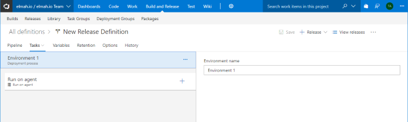

Set Up Deployment Tracking
Deployment tracking creates an overview of the different versions of your software and show you how well each version performed. With this integration in place, you will be able to see when you released and if some of your releases caused more errors than others. While most pages on elmah.io supports everything from verbose to fatal messages, the context on deployment tracking is around warnings and errors.
To set up deployment tracking, you will need to tell elmah.io when you release, using our REST API or one of the integrations. Deployments are as default created on all of your logs, but this can be tweaked. More about this later.
Tell elmah.io when you release
When you create a release of your software either manually or with the help from a tool like Octopus, you need to tell elmah.io about it. The elmah.io REST API v3, provides an endpoint named deployments, which you can call when creating releases. After calling the endpoint, all new messages to your logs, will automatically be decorated with the most recent version number.
Manually using Swagger UI
If you release your software manually, creating the new release manually is easy using Swagger UI. Swagger UI is a graphical client for calling a Swagger enabled endpoint (much like Postman). Navigate to https://api.elmah.io/swagger/ui/index, expand the Deployments node and click the POST request:
To create the release, input your API key (Where is my API key?) in the top right corner and click the JSON beneath Model Schema. This copies the example JSON to the deployment parameter. A minimal deployment would look like the following, but adding more information makes the experience within elmah.io even better:
{
"version": "1.42.7"
}
The version string in the example conforms to SemVer, but the content can be anything. The date of the release is automatically added if not specified in the JSON body.
Click the Try it out! button and the deployment is created.
Using PowerShell
If you release your software using a build or deployment server, creating the new release is easy using a bit of PowerShell. To request the deployments endpoint, write the following PowerShell script:
$version = "1.42.7"
$ProgressPreference = "SilentlyContinue"
$url = 'https://api.elmah.io/v3/deployments?api_key=API_KEY'
$body = @{
version = $version
}
Invoke-RestMethod -Method Post -Uri $url -Body $body
(replace API_KEY with your API key found on your organization settings page)
In the example, a simple version string is sent to the API and elmah.io will automatically put a timestamp on that. Overriding user information and description, makes the experience within the elmah.io UI better. Pulling release notes and the name and email of the deployer, is usually available through environment variables or similar, depending on the technology used for creating the deployment.
Using Kudu
Kudu is the engine behind Git deployments on Microsoft Azure. To create a new elmah.io deployment every time you deploy a new app service to Azure, add a new post deployment script by navigating your browser to https://yoursite.scm.azurewebsites.net where yoursite is the name of your Azure website. Click the Debug console and navigate to site\deployments\tools\PostDeploymentActions (create it if it doesn't exist).
To create the new PowerShell file, write the following in the prompt:
touch CreateDeployment.ps1
With a post deployment script running inside Kudu, we have the possibility to extract some more information about the current deployment. A full deployment PowerShell script for Kudu, would look like this:
$version = Get-Date -format u
(Get-Content ..\wwwroot\web.config).replace('$version', $version) | Set-Content ..\wwwroot\web.config
$ProgressPreference = "SilentlyContinue"
$commit = [System.Environment]::GetEnvironmentVariable("SCM_COMMIT_MESSAGE");
$commitId = [System.Environment]::GetEnvironmentVariable("SCM_COMMIT_ID");
$httpHost = [System.Environment]::GetEnvironmentVariable("HTTP_HOST");
$deployUrl = "https://$httpHost/api/deployments/$commitId"
$username = "MY_USERNAME"
$password = "MY_PASSWORD"
$base64AuthInfo = [Convert]::ToBase64String([Text.Encoding]::ASCII.GetBytes(("{0}:{1}" -f $username,$password)))
$deployInfo = Invoke-RestMethod -Method Get -Uri $deployUrl -Headers @{Authorization=("Basic {0}" -f $base64AuthInfo)}
$url = 'https://api.elmah.io/v3/deployments?api_key=API_KEY'
$body = @{
version = $version
description = $commit
userName = $deployInfo.author
userEmail = $deployInfo.author_email
}
Invoke-RestMethod -Method Post -Uri $url -Body $body
(replace MY_USERNAME and MY_PASSWORD with your Azure deployment credentials and API_KEY with your elmah.io API key located on your organization settings page)
The script generates a new version string from the current date and time. How you want your version string looking, is really up to you. To fetch additional information about the deployment, the Kudu deployments endpoint is requested with the current commit id. Finally, the script creates the deployment using the elmah.io REST API.
Using Octopus Deploy
Notifying elmah.io of a new deployment from Octopus Deploy, is supported through a custom step template. To install and configure the template, follow the steps below:
-
Go to the elmah.io - Register Deployment step template on the Octopus Deploy Library.
-
Click the Copy to clipboard button.
-
Click Library in the header on your Octopus Deploy instance and go to the Step templates tab.
-
Click the Import link and paste the step template copied from the Library. Then click Import.
-
Go to the Process tab of your project on Octopus Deploy and click the Add step button. The elmah.io step template is available in the bottom of the list.
-
When added to the process, select Octopus Server in Run on and input your API key found on your organization settings page. Optionally input a log ID, to support multiple services.
And we're done. On every new deployment, Octopus Deploy will notify elmah.io
Using Visual Studio Team Services
If you are using Visual Studio Team Services, you should use our VSTS extension to notify elmah.io about new deployments. To install and configure the extension, follow the simple steps below:
-
Go to the elmah.io Deployment Tasks extension on the Visual Studio Marketplace and click Install (log in if not already).
-
Select the account to install the extension into and click Confirm:
-
Go to your Visual Studio Team Services project and edit your Release definition. 
-
Click Add tasks and locate the elmah.io Deployment Notification task. Click Add.
-
Copy your API key from your organization settings page and paste it into the API Key field. Click Save.
That's it! VSTS will now notify elmah.io every time the release definition is executed. Remember to input a specific log ID as well, if you want to support versioning different services.
Using Umbraco Cloud
Umbraco Cloud uses Azure to host Umbraco websites, why supporting deployment tracking pretty much corresponds the steps specified in Using Kudu. Navigate to https://your-umbraco-site.scm.s1.umbraco.io where your-umbraco-site is the name of your Umbraco site. Click the Debug console link and navigate to site\deployments\tools\PostDeploymentActions\deploymenthooks (create it if it doesn't exist). Notice the folder deploymenthooks, which is required in order for your scripts to run on Umbraco Cloud.
Unlike Kudu, Umbraco Cloud only executes cmd and bat files. Create a new cmd file:
touch create-deployment.cmd
with the following content:
echo "Creating elmah.io deployment"
cd %POST_DEPLOYMENT_ACTIONS_DIR%
cd deploymenthooks
powershell -command ". .\create-deployment.ps1"
The script executes a PowerShell script, which we will create next:
touch create-deployment.ps1
The content of the PowerShell script looks a lot like in Using Kudu, but with some minor tweaks to support Umbraco Cloud:
$version = Get-Date -format u
$ProgressPreference = "SilentlyContinue"
$commitId = [System.Environment]::GetEnvironmentVariable("SCM_COMMIT_ID");
$deployUrl = "https://your-umbraco-site.scm.s1.umbraco.io/api/deployments/$commitId"
$username = "MY_USERNAME"
$password = "MY_PASSWORD"
$logId = "LOG_ID"
$base64AuthInfo = [Convert]::ToBase64String([Text.Encoding]::ASCII.GetBytes(("{0}:{1}" -f $username,$password)))
$deployInfo = Invoke-RestMethod -Method Get -Uri $deployUrl -Headers @{Authorization=("Basic {0}" -f $base64AuthInfo)}
$url = 'https://api.elmah.io/v3/deployments?api_key=API_KEY'
$body = @{
version = $version
description = $deployInfo.message
userName = $deployInfo.author
userEmail = $deployInfo.author_email
logId = $logId
}
Invoke-RestMethod -Method Post -Uri $url -Body $body
Replace your-umbraco-site with the name of your site, MY_USERNAME with your Umbraco Cloud username, MY_PASSWORD with your Umbraco Cloud password, LOG_ID with the id if the elmah.io log that should contain the deployments (Where is my log ID?) and finally API_KEY with your elmah.io API key, found and your organization settings page.
There you go. When deploying changes to your Umbraco Cloud site, a new deployment is automatically created on elmah.io.
Decorate your messages with a version number
As default, all messages are decorated with the most recent deployment version. If you want to override this behavior, check out Adding Version Information for details.
Versioning Different Services
Chances are that your software consists of multiple services released independently and with different version numbers. This is a common pattern when splitting up a software system in microservices. How you choose to split your elmah.io logs are entirely up to you, but we almost always recommend having a separate log for each service. When doing so, you only want deployment tracking to show the releases from the service you are currently looking at. The problem here is that deployments on elmah.io are shown on all logs as default.
To make sure that only deployments related to the service you are looking at are shown, you need to decorate each deployment with the log ID where it belong. The deployments API support this through an optional logId property. If set, the new deployment is only shown on the specified log.
This article was brought to you by the elmah.io team. elmah.io is the best error management system for .NET web applications. We monitor your website, alert you when errors start happening and help you fix errors fast.